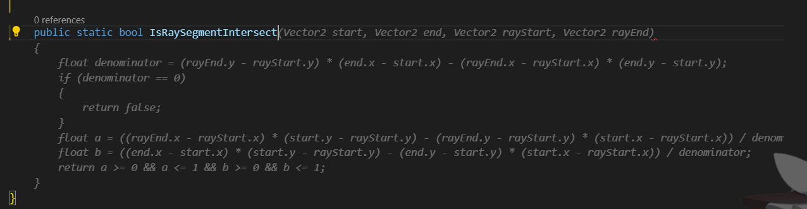
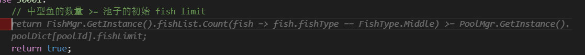
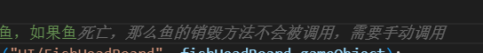

开发日志2
先新建放着
我主要想看看开发日志1的封面

做了件事情
把 Camera 的位置移到了池子上沿的中点
感觉后面写左右对称的钓鱼的逻辑的时候会方便很多很多
突然想到个问题：鱼会向后游嘛
感觉没见过有丶反直觉
于是去问了问神奇海螺
鱼会不会倒着游？
倒着游分为两种：一种是向后游，一种是仰泳
蝴蝶鱼的尾部或背鳍上通常有一个斑点，这是它们的“假眼”而它们真正的眼睛隐藏在头部的黑色条纹中，不易被发现。蝴蝶鱼倒着游时，能让敌人误以为它们的尾巴是头。当敌人发起攻击时，它们一摇尾巴就可以很快地逃走了。
一般中、大型鱼和一些小型鱼，比如像孔雀鱼这样的卵胎生鱼类，在追求异性的时候会向后游，大型鱼在打架时也会倒游，但是不能一直倒游，只能向后一小段距离
有一种热带鱼，叫反游猫，可以肚皮朝上游，但在大多时候还是和正常鱼一样肚皮朝下游。
感觉有些东西还是有必要记录一下的
于是随手搞了个新玩意
嘻嘻
模板：
1 | <button class="liquid"><span>xxxxxxxx</span><div class="liquid"></div></button> |
效果：
顺便记录一下最强插件的一些骚操作
虽然我看不懂但好像没有问题
以后我一定好好写注释
当我又好像不需要写注释
一个优秀的代码决不允许8层 if 嵌套

究竟想要 Remove 什么东西

< 未完待续 >


回归正题
好像在开发日志1中都没提到游戏的玩法
首先这是一个弹幕互动游戏，所以必须要考虑到直播延迟的问题
一般正常延迟在 5s 左右吧
游戏核心分成两部分：抛竿和提竿
一杯茶一包烟，一根鱼竿钓一天
钓鱼佬的鱼都从菜市场买来的
当然不能做成抛完杆然后每隔一小时来看一下鱼有没有上钩
但我也不想做成抛完杆 Random.Value < 0.1 ? “鱼上钩了” : “鱼不见了”
所以最终通过发送角度来控制抛竿的方向，其中会有延迟和风速的叠加影响
至于角度会在每条鱼的上方进行辅助显示
虽然但是这更像插鱼或者是黄金矿工，但至少从一成品来看还行
鱼上钩之后要开始和鱼拉扯
每条鱼会有若干不同的规则
每个玩家会有若干骰子
每隔一段时间会掷骰子
然后根据规则计算骰子所对应的点数，以此作为拉力
当然如果线断了那鱼就跑了
一起加油努力钓鱼吧，各种成就奖励等你来发现
至于在开发日志1中提到的鱼王相关的部分当然是咕咕咕到开发日志3中
记录一个鬼故事，可能哪天又会重现于世
在掷骰子后需要根据结果设置鱼的速度
运行时有一次一条鱼宛如死鱼一样一动不动
观察发现在速度设置完后极短时间被一股神秘力量归零了…
将可能的地方都打上断点进行测试
一个都没有触发…
然后重开了测试之后再也没有碰到了…
每次 git commit 时候看到被修改的文件都有几十个总觉得自己做了很多事，谢谢 Unity
终于在若干天前完成了 v0.0.1 版本的测试
直播测试达到了预期的效果，光荣下播
噜噜噜，啊哇哇
这里记录一下目前为止实现了一些什么功能
提笔又止
提笔㕛止
提笔叒止
提笔叕止
啊我不想写
为什么 FF14 的房子只有 400 个家具位
不想封层
稍微设计下 400 个家具位就没了
房子不想装修 日志不想记录
怕不是得了
那贴一张图吧

这张纸包含了整个项目最难的部分
如何将错综复杂的规则有一种比较优雅的方式用一种统一的方式存在一张表里
规则包括但不限于：相同，不同，存在，不存在，大于，小于，总和，指定区域等等以及它们的组合
最终设计用了 8 个字段来实现了对 95% 规则的统一描述
CheckRule 函数只有 104 行
当时写完测试完修完 bug 之后我以为整个项目中的难点已经过去了
但其实噩梦才刚刚开始
建议到百万数据的时候再考虑这个问题
9个骰子一共有 10077696 种组合
对于某一种组合判断是否满足规则很简单
但要找出符合符合一条规则的所有组合却很难
因而评判多条规则之间的耦合程度（同时满足多条规则的组合的加权和）更是难上加难
有两种解决方法：
按规则分类每种规则写一套求解方法
优点：在写求解代码的时候规则有直观的表示，并且可以根据每大类的特点进行优化求解思路，从而达到更快的求解速度
缺点：需要先对规则进行分类，代码量相比第二种会大很多（我觉得），后期每次加入新规则都需要进行维护扩写新分支
硬着头皮逆向一套求解方法适用所有规则
优点：一次写完终身受益
这一条还不够嘛 缺点：我是谁，我在写什么，我要写什么，我为什么这么写。所有逻辑顺序全靠脑补，debug 困难，多重嵌套（嵌中嵌中嵌）
可想而知我选择了
于是就小手一抖敲了 500+ 行代码
其中最多的地方是 11 层嵌套
tempSum += diceBase[scopeDiceList[j]] * (tempList[j] - 1);
体会一下这个缩进…
至此规则部分只剩下最后一块碎片没有完成了
如何分配超额完成每条规则后的额外奖励系数以及在规则抽选时候的耦合系数的阈值设定
暂时还没有想到很好的方法
所以就去 ff14 里设计装修了
设计了一套整体主题为迷宫的装修
为了有效利用空间并有充实的内容
400 个家具位基本都用完了才勉勉强强完成雏形
其中包括两个主谜题区和三个艺术区
要精装修是不可能了
个人还是挺喜欢的
虽然但是不能精装修有丶可惜
还在纠结要不要换个主题封个层
纠 大 结